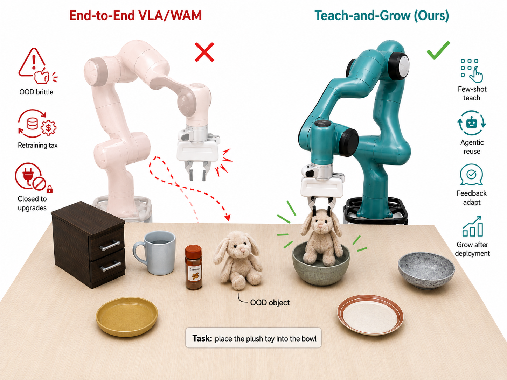
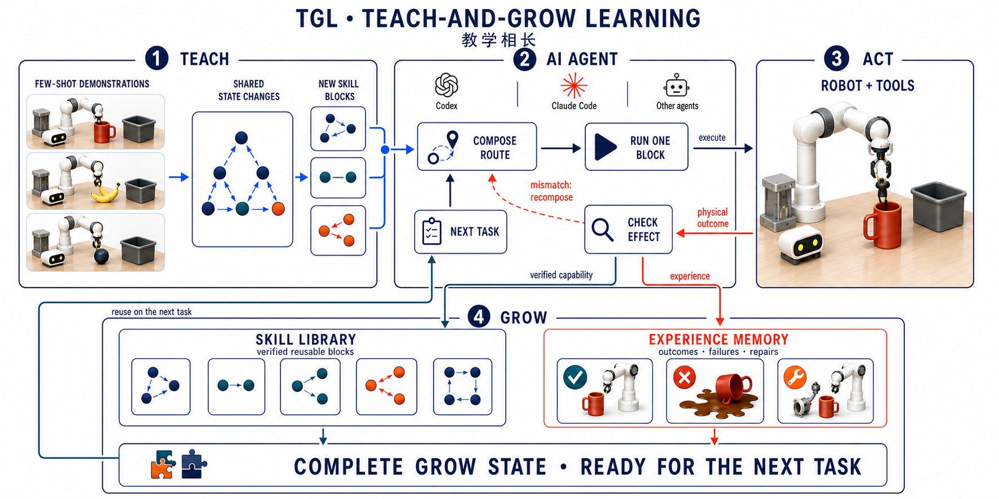
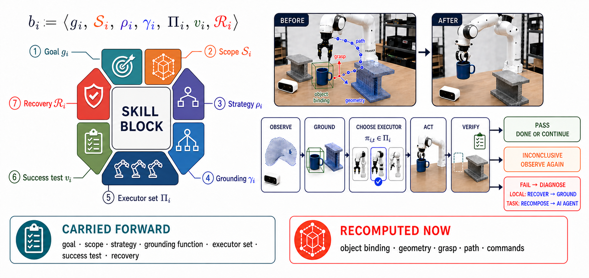

"리트레이닝 세금(retraining tax, 새 물체·센서·태스크가 등장할 때마다 데이터 재수집·정책 재학습·회귀 테스트를 반복해야 하는 비용)"을 없애기 위해, Teach-and-Grow Learning (TGL)은 파운데이션 모델의 가중치 θ를 동결한 채 "Skill Block(하나의 의미 있는 서브골에 대한 닫힌-루프 행동 컨테이너)"과 "Experience Memory(성공·실패·복구 기록)"만 갱신한다. 몇 개의 성공 시연 → 멀티모달 Agent가 의미 단위로 분해·정렬 → 재사용 가능한 Skill Block으로 증류 → 새 장면에서 재-그라운딩·재조합해 실행. LIBERO에서 저자 주장 SOTA를 달성하고, 통제 실험(Table I)에서 블록 라이브러리를 6→8개로 확장하는 것만으로 동일 executor의 성공률이 0/6 → 4/6으로 상승. 함께 제안한 Teach-and-Grow 스케일링 법칙 가설은 "누적된 유효 재사용 경험 X가 증가할수록 미래 태스크 오류와 필요 시연량이 거듭제곱(power-law)으로 하한선까지 감소한다"고 예측(현 논문에서는 가설 제시 단계, 종단 실험은 미래 과제).
현재 로봇 학습의 지배적 흐름은 VLA(Vision-Language-Action, 시각·언어를 관찰로 받아 행동을 직접 출력하는 통합 정책)와 WAM(World-Action Model, 세계 모델과 행동을 함께 학습하는 정책)처럼 관찰·언어를 행동에 직결시키는 엔드-투-엔드 파운데이션 모델이다. RT-1/RT-2, OpenVLA, π0, Octo 등이 대표적이며, "모델과 데이터를 키우면 일반 로봇 지능이 창발한다"는 언어 모델식 확장 가설을 공유한다.
저자들은 이 가설이 로봇에서는 성립하기 어렵다고 주장한다. 언어 모델은 이미 존재하던 텍스트 코퍼스를 활용했지만, 로봇의 학습 근거인 "관찰-행동-접촉-물리적 결과"의 구현체 정렬(embodiment-aligned) 데이터는 실제로 로봇을 운전해야만 생성된다. 새 물체·센서·그리퍼·본체(body)가 등장할 때마다 (1) 대표 데이터 수집, (2) 정책 재최적화, (3) 기존 태스크에 대한 회귀 테스트가 다시 필요해지는데, 이를 저자들은 "retraining tax(리트레이닝 세금)"이라 부른다.
대안으로 두 계열이 등장했다: ASPIRE(Agentic Skills discovery) 계열의 제로-샷 에이전트 탐색과 SayCan/Code-as-Policies/VoxPoser/ReKep/Inner Monologue 같은 LLM을 워크플로 내 슬롯으로 쓰는 계열. 전자는 물리 로봇에서 순차적 결정이 많아 안전 문제를, 후자는 에이전트가 워크플로 자체를 소유하지 못하는 한계를 가진다.
TGL은 지각·계획·제어·학습된 정책이 Skill Block 내부의 선택 가능한 능력(capability)으로 편성되는 구조다. 최상위는 멀티모달 Agent(멀티모달 LLM 기반 추론자)이며, "지금 어떤 서브골이 중요한가 / 어떤 증거가 부족한가 / 마지막 행동이 의도한 효과를 냈는가"처럼 태스크 경로 자체를 바꿀 수 있는 질문만 담당한다. 연속 고레이트 제어는 로봇 네이티브 executor(학습 정책·기하 계획기·서보·클래식 컨트롤러 등)에 위임된다.
각 블록 bi는 다음 7개 필드로 정의된다:
bi := ⟨gi, 𝒮i, ρi, γi, Πi, vi, ℛi⟩
블록에 저장하지 않는 것: 시연의 월드 좌표, 픽셀, 원본 경로, 관절 궤적, 저수준 액션 재생. 즉 시연은 증거(evidence)일 뿐이며, 실행 가능한 스킬은 그 위에서 추상화된 것.
여러 성공 시연을 세미틱 세그먼트로 분해: d(j) = (s1(j), s2(j), …, sKj(j)). 각 세그먼트는 의미 서명(semantic signature) σ(s) = ⟨gs, us, as, ℓs, ps, qs⟩(서브골, 조작 대상, 어포던스, 목표 관계, 선행 효과, 순서 컨텍스트)로 태깅.
같은 효과를 내는 세그먼트들을 정렬하고(모터 좌표가 아니라 의미 효과 기준), 공유 전략을 합성: ρk = Synthesize(𝒜k). 이때 시연 간 불변량(invariant)과 인스턴스 변수가 분리된다:
태스크 n 종료 후 업데이트 연산자는:
θn+1 = θn = θ (파운데이션 파라미터 불변)
(ℬn+1, ℳn+1) = 𝒰(ℬn, ℳn, 𝒟n, Δℋn) (라이브러리·메모리만 갱신)
Experience Memory의 한 항목: μj = ⟨task, context, blocks, outcome, diagnosis, repair, evidence⟩. 성공만이 아니라 "왜 실패했는지, 다음 시도에서 무엇을 바꿔야 하는지"의 구조화된 진단을 기록해 사람이 검사·편집 가능. 저자들은 이를 대비되게 BC(Behavior Cloning, 행동 복제)·RL(Reinforcement Learning, 강화학습)과 비교(Table II 부록): 학습 객체가 각각 "파라메트릭 정책" / "정책·가치·월드 모델" vs. TGL은 "명시적 Skill Library와 태스크 조합".
의미 결정 시점 t에서: (ot+1, εt) = Run(bit,1, πit,1,t, ot). 블록 실행 후 에이전트가 관찰 효과와 의도 효과를 비교. 일치하면 계속, 불일치면 재관찰·다른 executor·경로 재구성·집중 시연 요청(targeted teaching). "재파지/재관찰"이 별도 모델 업데이트 없이 이뤄진다.
4단계 유지(retention) 정의: (1) 저장 유지 — 블록이 남아있음, (2) 검색 유지 — 올바른 블록이 선택됨, (3) 그라운딩 유지 — 전략이 현재 센싱·임바디먼트에 결합됨, (4) 행동 유지 — 실제 실행 성공. "저장된 파일 = 능력 유지"가 아님을 강조.
파운데이션 에이전트·툴 버전·테스트-타임 예산·미래 태스크 분포·스코어 규칙을 고정한 상태에서, 유효 재사용 경험 Xn이 증가할 때:
여기서 유효 재사용 경험은 저장한 에피소드 수가 아니라, Xn = Σh∈ℋn ω(h; ℬn, ℳn) — 각 경험이 (증거 신뢰도, 커버리지 추가분, 검색 가능성, 그라운딩 유효성, 기존 블록과의 호환성) 5개 요인으로 [0,1] 점수화. 중복된 궤적 다수 < 잘 정제된 소수 브리지 블록. 저자들은 본 논문에서는 가설만 제시하고, 종단(longitudinal) 실험은 부록 G의 프로토콜로 미래 과제로 남긴다.
엔드-투-엔드 비용: CE2E(K) = Ccollect(Ncover(K)) + Ctrain(Ncover(K)) + Cregress(θnew(K), Told). 반면 TGL 비용: CTGL(K) = C0 + Σ κk + Ccumretrieve(K). 블록당 비용 κk(κteach+κground+κvalidate+κlink)가 국소 유지되고 계층적 검색이 O(K)면 K에 대해 최대 선형. 엔드-투-엔드는 조밀 커버리지 재개방 때문에 볼록(convex)으로 발산.
LIBERO(Benchmarking Knowledge Transfer for Lifelong Robot Learning)는 평생 로봇 학습용 표준 벤치마크로 Spatial / Object / Goal / Long(=LIBERO-10)의 4개 태스크 스위트를 포함한다. 저자들은 "완성된 표준 LIBERO 평가에서 TGL이 SOTA(state-of-the-art) 성공률을 달성했다"고 본문에 서술하지만, 본 논문 본문에는 구체 수치·베이스라인 표가 제시되지 않음(Appendix I 참조 안내). 논문의 실증 기여는 표준 지표보다 구조가 어떻게 작동하는지를 보이는 통제 실험에 집중.
| Study | 관찰 결과 | 메시지 |
|---|---|---|
| Task-specific 학습 사이클 | 3개의 교사 궤적 → 2개의 블록(획득, 관계에 맞춘 놓기) 유도. 2 blocks solve 3/3 states. save-and-reload 후에도 3/3 유지. 학습된 범위 밖에서는 "첫 미충족 의미 효과"에서 정지 | 시연이 지속·범위 인지형 행동이 됨 |
| 피드백 기반 실행 | bowl-on-plate: pick 성공 후 post-grasp 증거가 불충분하면 에이전트가 남은 경로 재구성. drawer-opening: 결론 불가 결과에서 재관찰 트리거 | 결과가 에이전트의 다음 행동을 바꿈 |
| 고정 executor 라이브러리 파일럿 | 6-블록 라이브러리: 0/6 성공. 학습 블록 2개 추가 → 8-블록: 4/6 성공. 모델 가중치·런타임·평가 예산 불변 | 로컬 라이브러리 성장이 동일 executor가 할 수 있는 일을 바꿈 |
(수치는 소규모 파일럿 통제 실험; 표준 LIBERO 성공률 수치는 논문 본문에 미기재)
10개의 시각 시연이 획득(acquisition)·해제(release) 두 단계로 분해되고, 관찰된 20개 효과 전부 확인. 별도 학습 사이클에서 3개 교사 궤적이 두 블록("요청 객체 획득" + "요구 관계로 놓기")으로 유도되어 3개 평가 상태 모두 해결. 저장/재로드/재해결이 동일 성공률로 유지되며, 기존 6-block 경로도 병존(대체가 아닌 대안 추가).
3개 교사 궤적에서 유도된 "acquire the requested alphabet-soup can" 블록:
블록은 산출 효과에 따라 6종으로 조직: acquisition(안정된 소유·접촉 확립), transport(상태 유지하며 공간 관계 변경), release/placement(지지·수용·정렬·삽입 확립), articulation/activation(열기·닫기·회전·누르기·토글·구동), observation(이후 결정에 필요한 증거 수집), recovery(진단된 실패 후 사전 조건 복원).
본 논문은 표준적인 "구성요소 하나씩 제거하는 ablation"보다 메커니즘의 존재 증명에 초점을 둔다. 주요 발견:



아직 추가 질문이 없습니다. 이 논문에 대해 더 궁금한 점을 물어보시면 답변을 여기에 정리해 추가합니다.